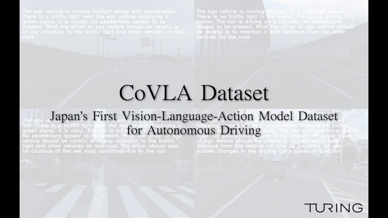

株式会社Turingは、自動運転向けVision-Language-Action（VLA）モデルデータセット「CoVLAデータセット」を公開した。日本初の自動運転VLAデータセットである。この研究論文はWACV 2025での発表が採択されている。
CoVLA（Comprehensive Vision-Language-Action）データセットは、80時間以上の走行データを収録しており、「アノテーションの規模と多様性は既存の国際的なデータセットを上回る」とされている。Turingはこれに合わせてVLAモデル「CoVLA-Agent」も開発した。CoVLA-Agentは画像から自然言語で走行環境を解釈し、ルート計画を生成する。
Turingはデータセットと並んで3つの補完的リソースも公開した。
Llama-3-heron-brain-70B, 8Bは、日本の道路コンテキスト向けに学習された専用LLMである。このモデルは、言語性能のGENIACベンチマークで「GPT-3.5-turboを上回り、第2位のスコアを達成した」とされている。
日本語統合を支援する2つの新データセットを公開した。
vlm-recipesは、マルチモーダルモデル学習のためにPyTorchのFSDP（Fully Sharded Data Parallel）バックエンドを活用したオープンソースの分散学習ライブラリである。
TuringはCoVLAデータセットの完全版を学術機関に公開する予定であり、自動運転の安全性と信頼性の向上に貢献することを目指している。